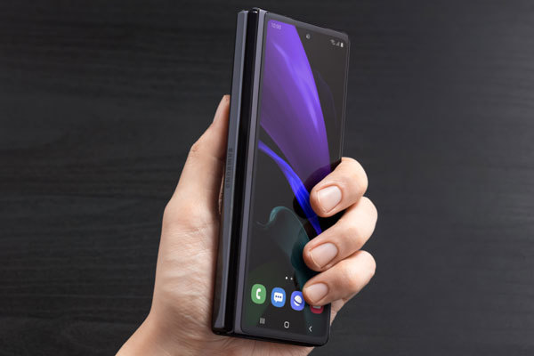

somos una empresa que busca desarrollar la mejor tecnologia para electronicos en especial laptos y computadoras,nuestro objetivo es darle al cliente la mayor comodidad y satisfaccion posible con sus mobiles y ya estamos cerca de conseguirlo con nuestro mas reciente modelo el jtx-300 este telefono tiene caracteristicas especiales para brindarle al cliente la mejor experiencia nuestro nuevo telefono posee caracteristicas como comando por voz integrado con un asistente por voz llamado "jarvis" programado para todas sus necesidades, ademas de que puede programar toda la casa desde su telefono, jarvis tambien puede proveer informacion ya que esta conectado al internet y busca en las bases de datos para poder encontrar la informacion solicitada, este telefono tambien tiene integrado una memoria del disco duro con un almacenamiento total de 1tb con 16gb adicionales, una memoria ram de 18gb y un procesador Samsung Exynos 2100.
